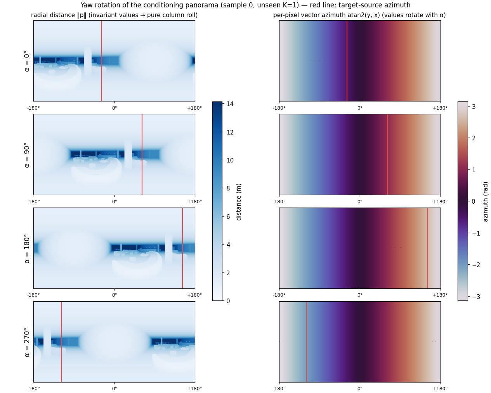
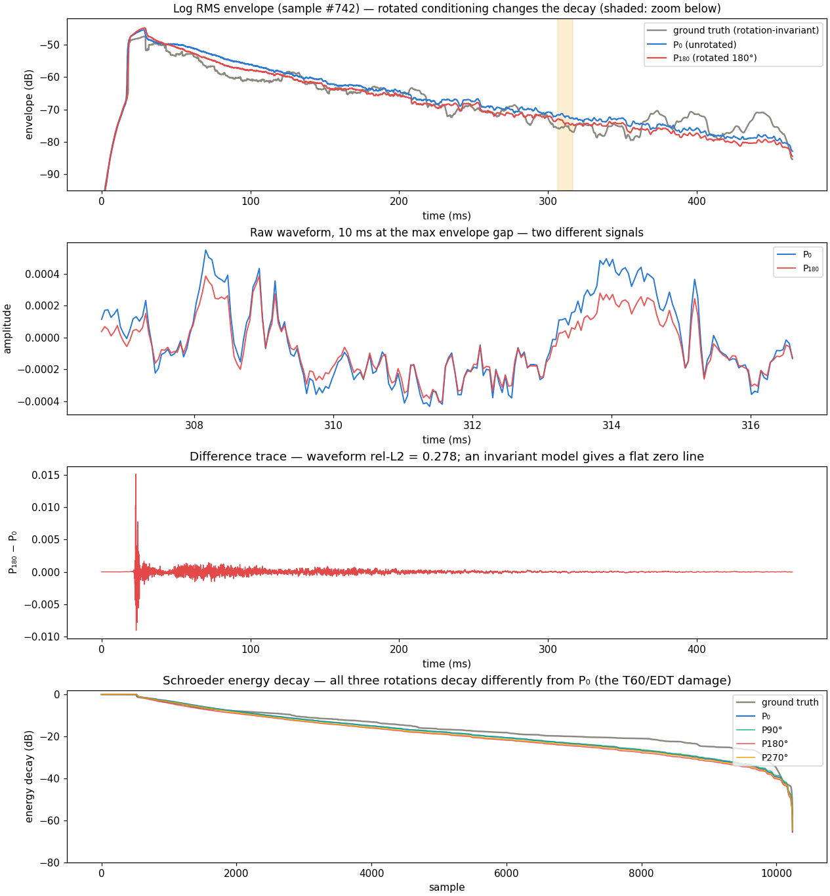

exp_02 — FLAC is not yaw-invariant (frozen checkpoint, unseen K=1)
Full 6337-item split · frozen FLAC_EMA · seed 42 · pristine 0bd5da0 · 2026-07-04/05. A rigid yaw rotation of the whole scene leaves the true mono RIR unchanged — an invariant model would predict identically. Numbers mirror _results.md.
Control: the α=0 run is bit-identical to baseline (7/7 metrics; comparator max|Δ| = 0.0 over all 6337×10240 samples). Everything below is caused by rotation alone.
Verdict — hypothesis confirmed. Rotating only the conditioning degrades every metric (Metric 2, up to 18σ of the exp_01 noise floor) and moves the prediction itself by ~20% rel-L2 (Metric 1) — ~5× larger than the net accuracy loss, so Metric 2 alone understates the symmetry defect.
What the rotation actually does — inputs and outputs

The conditioning input under C₄ yaw rotation (sample 0). Left: radial distance ‖p‖ — invariant per-pixel values, so the room geometry rolls horizontally with α (red line: target-source azimuth, moving with the scene). Right: per-pixel vector azimuth — the field is identical at every α: the column roll and the per-pixel vector rotation cancel exactly, which is precisely the geometric-consistency property of a valid equirectangular map (a roll/rotation sign error would visibly break this pattern; cf. the in-repo self-check).

The model output before/after rotation — sample #742, chosen at the 90th percentile of the per-sample envelope-gap distribution (mean |ΔdB| 1.43 over the decay region; dataset median 0.43) so it is representative-strong, not the maximum; its waveform rel-L2 is 0.278. Same starting noise, same GT; only the conditioning was rotated. Top: log-RMS envelopes — P₁₈₀ follows a visibly different decay than P₀. Second: 10 ms of raw waveform at the maximum envelope gap — two different signals. Third: the P₁₈₀−P₀ difference trace (flat zero for an invariant model). Bottom: Schroeder decay for all three rotations.
Metric 2 — accuracy vs ground truth under rotated conditioning
run
T60 (%)↓
C50 (dB)↓
EDT (ms)↓
R@1 (%)↑
baseline (α=0)
9.99
1.047
40.11
6.71
rot90
10.38
1.074
43.58
6.3
rot180
10.72
1.189
46.39
6.38
rot270
10.44
1.126
44.07
6.11
T60 degradation peaks at 180° (+0.73 = 18σ).EDT: +3.5 to +6.3 ms (9–17σ). Separate panels — different units, one axis each.
Metric 1 — invariance gap Pα vs P0
α
waveform rel-L2
T60 gap (%)
C50 gap (dB)
EDT gap (ms)
0°
0.0
0.0
0.0
0.0
90°
0.221
3.34
0.563
18.65
180°
0.193
3.33
0.55
20.11
270°
0.214
3.41
0.6
19.98
The prediction moves ~20% in relative energy under a rotation that should change nothing. α=0 is exactly 0 (determinism + pairing control).
Reference targets set for the fix
A yaw-invariant FLAC must achieve Metric-1 ≡ 0 at all α (canonicalization/frame-averaging gives this by construction on column-quantized angles) while Metric 2 at α=0 stays within ~2σ of baseline (T60 9.99, C50 1.047, EDT 40.11).